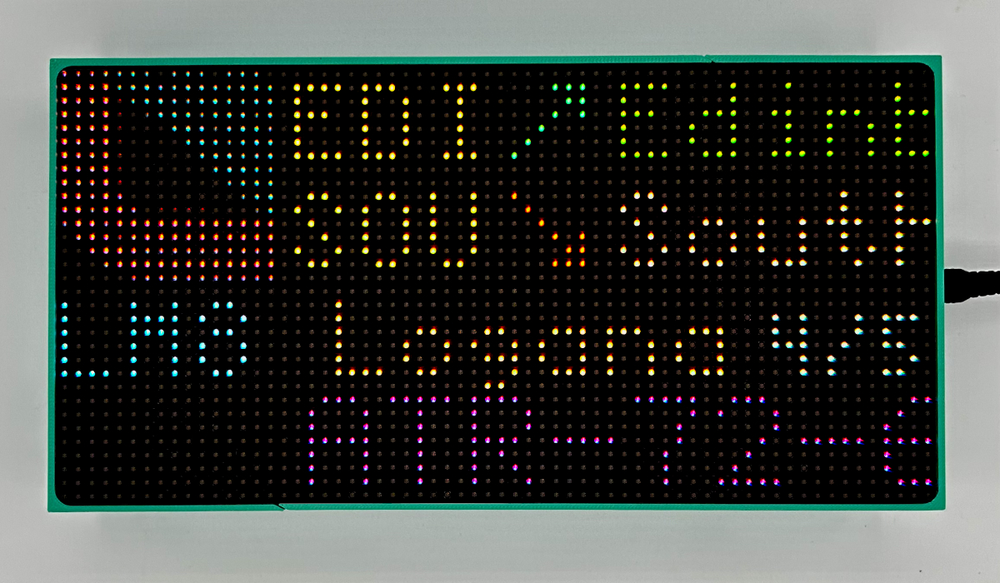

A minimal, headless Raspberry Pi OS image with a built-in web installer. Flash it, boot it, and follow the on-screen steps - no terminal required.

https://raw.githubusercontent.com/ColinWaddell/FlightTracker-Image/main/os_list.json
Paste this URL into RPi Imager → Choose OS → Use custom URL
Open RPi Imager, paste the URL above, set your Wi-Fi in Advanced Options, then flash to an SD card.
Insert the card and power on. The Pi connects to your Wi-Fi automatically using the credentials you set.
Visit http://flighttracker.local/ in your browser. The web installer guides you through the rest.
Hit Reboot when the installer finishes. FlightTracker starts automatically on the LED display.
Best performance. Use this unless you have a specific reason not to.
Use if you encounter issues with the 64-bit image or need 32-bit library compatibility.